Apple Watch から記録する

iPhone を取り出さなくても、Apple Watch からその場でメモを残せます。
記録した時刻はウォッチでメモを取った時刻のまま、あとで iPhone からまとめて時間記録アプリに取り込めます。
運動中・家事や育児で手がふさがっているとき・iPhone を持ち歩かない人にオススメです。
しくみ
Apple Watch でショートカットを実行し、リストから項目を選びます(またはメモを入力します)。日時とメモが、リマインダーアプリの「時間記録」リストに 1 件ずつ保存されます。
iPhone でショートカット「時間記録取込」を実行します。「時間記録」リストの内容が時間記録アプリに取り込まれます。
取り込んだリマインダーは「時間記録」リストから自動で削除されます。同じ記録が二重に取り込まれることはありません。
※ 記録の時刻は、取り込んだ時刻ではなくウォッチでメモを取った時刻になります。
記録のしかたを選ぶ
ウォッチで記録するショートカットは 2 種類あります。タップするだけで記録できる「選択肢から記録」がオススメです。両方入れて使い分けることもできます。
リストから選ぶ「選択肢から記録」オススメ！
「薬を飲んだ」「勤務開始」など、よく記録する項目をあらかじめリストにしておき、ウォッチではタップして選ぶだけで記録します。入力の手間がなく、音声入力しにくい場所や手早く記録したい人に向いています。
使い方を見る自由に入力する「時間メモ」
話しかける(音声入力)か手書きで、その場で好きなメモを入力します。いろいろな内容を記録したい人に向いています。
使い方を見る
※ どちらで記録しても、iPhone への取り込み方は同じです。
準備:リマインダーに「時間記録」リストを作る
iPhone の「リマインダー」アプリを使います。
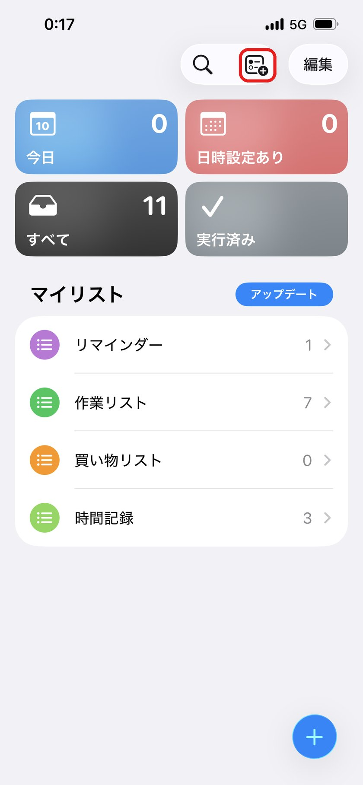
リマインダーアプリを開き、右上の「リストを追加」アイコンをタップします。
※ 右下の＋ボタンはリマインダーの追加なので、ここでは使いません。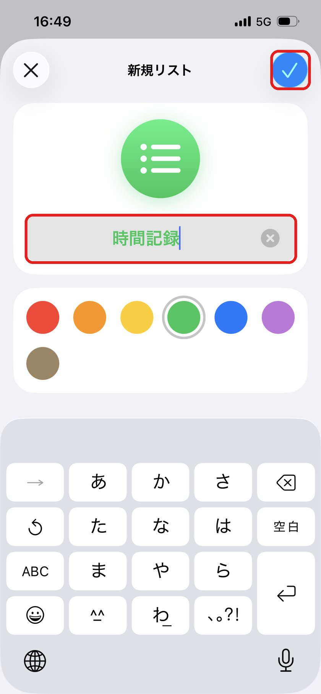
1. リスト名に「時間記録」と入力します。
2. 右上のチェックボタンをタップします。※ リスト名は「時間記録」と正確に入力してください。名前が違うとショートカットが動きません。
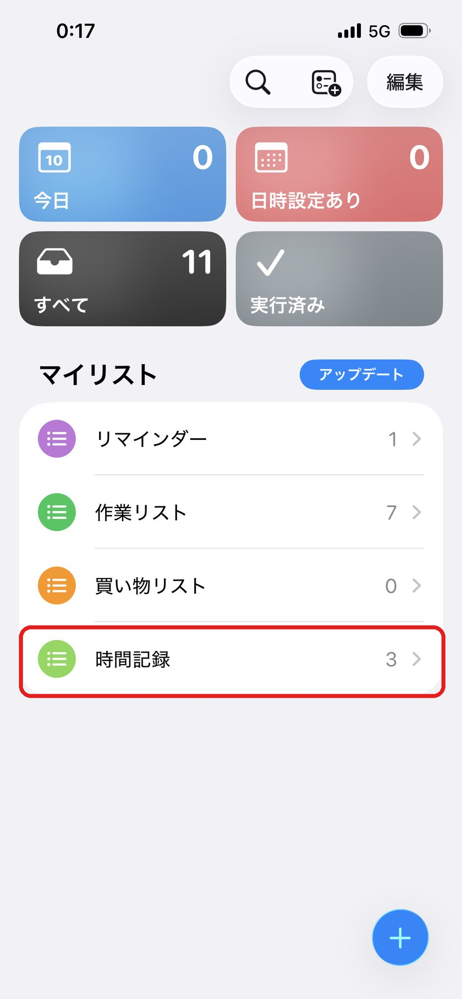
マイリストに「時間記録」が追加されれば準備完了です。
ショートカットを入手する
ウォッチで記録するショートカット(オススメは「選択肢から記録」。両方でも可)と、iPhone に取り込むショートカットを入手してください。
Apple Watch で記録するショートカット(どちらか、または両方)
リストから選ぶ「選択肢から記録」
ここからショートカットを入手(２回タップ)自由に入力する「時間メモ」
ここからショートカットを入手(２回タップ)iPhone に取り込むショートカット「時間記録取込」
ここからショートカットを入手(２回タップ)最初に実行したときにリマインダーへのアクセスの許可を求められたら、「許可」をタップします。
Apple Watch で記録する(リストから選ぶ)
はじめに、iPhone でリストの中身を自分用に書き換えます。
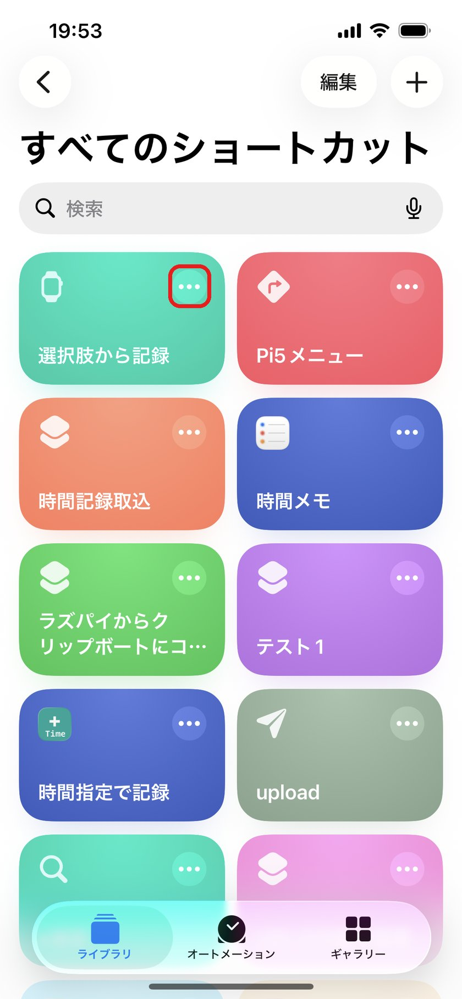
iPhone の「ショートカット」アプリで「選択肢から記録」の「・・・」をタップして編集画面を開きます。
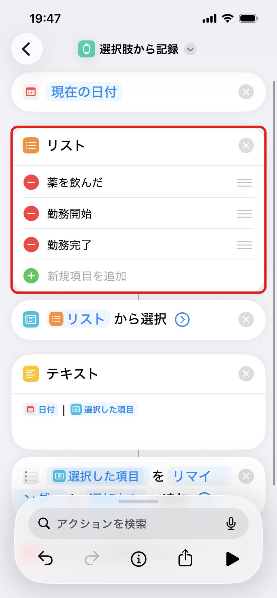
「リスト」の項目を、自分がよく記録する内容に書き換えます。最初は「薬を飲んだ・勤務開始・勤務完了」が入っています。「新規項目を追加」や − ボタンで数を増やしたり減らしたりできます。
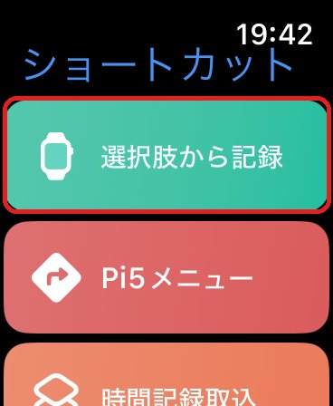
Apple Watch で「ショートカット」アプリを開き、「選択肢から記録」をタップします。
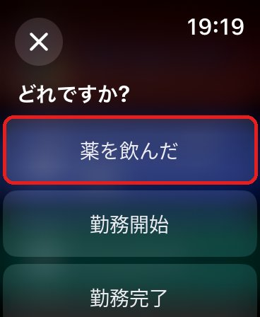
「どれですか?」とリストが表示されるので、記録したい項目をタップします。ウォッチが振動したら記録完了です。
※ 下の項目は Digital Crown を回すか、画面をスワイプして表示します。
Apple Watch で記録する(自由に入力)
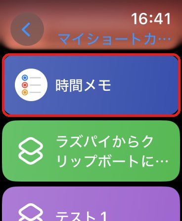
Apple Watch で「ショートカット」アプリを開き、「時間メモ」をタップします。
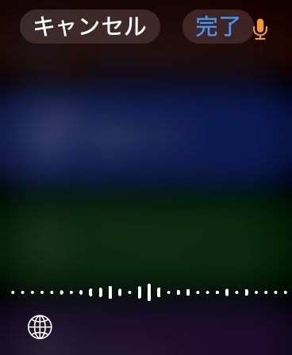
メモの入力画面になります。話しかける(音声入力)か、地球儀ボタンから手書きなどでメモを入力します。
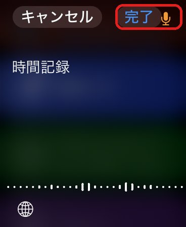
メモが入ったら、右上の「完了」をタップします。これで記録されます。
(便利)文字盤から記録する
文字盤にショートカットを置いておくと、もっと手早く記録を始められます。
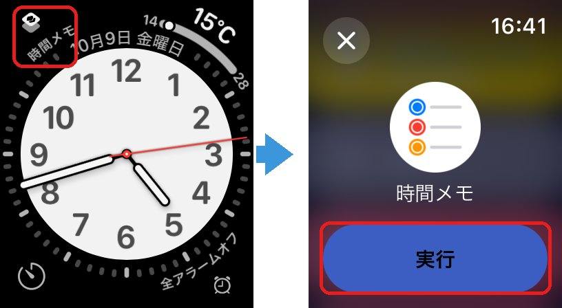
※ 文字盤のショートカット(例:「時間メモ」)をタップし、「実行」をタップします。文字盤への置き方: 文字盤を長押し →「編集」→ コンプリケーションで「ショートカット」から使うショートカットを選びます。「選択肢から記録」も同じように置けます。
iPhone で取り込む
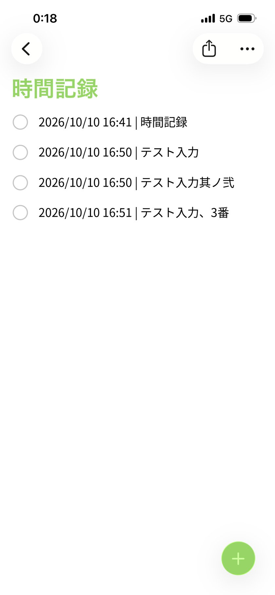
ウォッチで記録したメモは、リマインダーの「時間記録」リストに「日時 | メモ」の形で並んでいます。(手で編集する必要はありません)
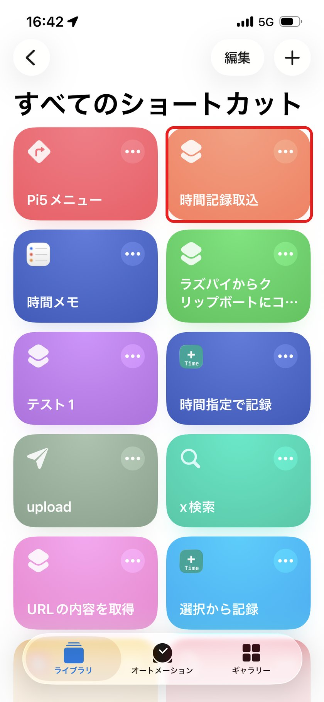
iPhone の「ショートカット」アプリで「時間記録取込」をタップします。
※ 記録が複数あるときは、1 件ずつ取り込むため時間記録アプリが何度か開いたり閉じたりします。故障ではありません。取り込み完了を知らせる振動があるまで、そのままお待ちください。
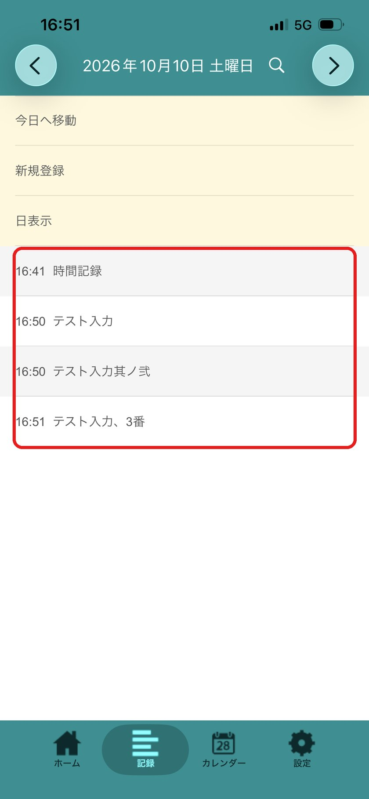
時間記録アプリの「記録」を開くと、ウォッチでメモを取った時刻で記録が追加されています。
取り込んだリマインダーは「時間記録」リストから削除されます。
(任意)取り込みを自動にする
毎日決まった時刻に取り込むようにすると、取り込み忘れがなくなります。
時間記録の通知をうけとるの手順 1〜5 と同じようにオートメーション(時刻)を作り、アクションに「ショートカットを実行」→「時間記録取込」を選んでください。
よくある質問
ウォッチにショートカットが表示されない
iPhone のショートカットアプリで、ウォッチで使うショートカット(「選択肢から記録」「時間メモ」)の「・・・」から詳細(i)を開き、「Apple Watch に表示」をオンにしてください。
リストの名前を変えたい / 間違えた
リマインダーのリスト名を「時間記録」に戻してください。別の名前にしたい場合は、ウォッチ用のショートカットと「時間記録取込」の両方で、リマインダーのリスト名を書き換えてください。
リストの項目を変えたい
iPhone のショートカットアプリで「選択肢から記録」を編集し、リストの項目を書き換えてください。ウォッチにもそのまま反映されます。
取り込んだリマインダーが消えた
取り込みが終わったリマインダーは、二重に取り込まないように自動で削除しています。記録は時間記録アプリに残っています。